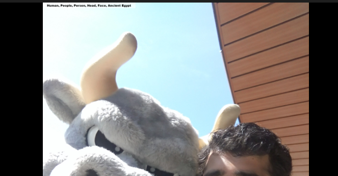
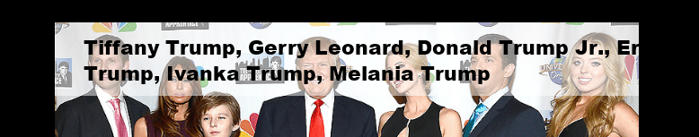
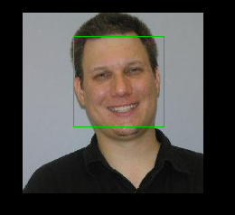

Face Collection
In this module we will learn how to make AWS Rekognition identify our self.
As we discussed in the previous module, that we will be using Collection. Let’s start with creating a collection. To create a collection for storing images, that function provided by Boto3 is create_collection():
rekresp = client.create_collection(CollectionId='myCollection',)
pprint(rekresp)
We are using “myCollection” as our collection name, but we can also give it some other name. It creates a collection in an AWS Region. The above program output will look like:
{'CollectionArn': 'aws:rekognition:us-east-1:050122124972:collection/myCollection',
'FaceModelVersion': '2.0',
'ResponseMetadata': {'HTTPHeaders': {'connection': 'keep-alive', 'content-length': '124', 'content-type': 'application/x-amz-json-1.1', 'date': 'Sat, 25 Nov 2017 00:43:12 GMT', 'x-amzn-requestid': '9d729749-d179-11e7-a131-8fd57d6e1f6f'},
'HTTPStatusCode': 200, 'RequestId': '9d729749-d179-11e7-a131-8fd57d6e1f6f', 'RetryAttempts': 0},
'StatusCode': 200}
Now that we have a collection, let’s add faces to the collection. “index_faces” function does that for us. We would be providing four parameters for this function: Collection name, Image byte, Name to the image, Attributes to be stored.
In coding the parameters would like:
rekresp = client.index_faces(CollectionId='myCollection',Image={'Bytes':
imgbytes},ExternalImageId='Name_OF_Person', DetectionAttributes=['ALL'])
And we are done. We have stored the image, now what’s left is to compare each face with the input image and check if they match or not. Again compare_faces is not the answer. Boto3 provides another method to perform this task. But remember, if it gets face match for one face, it will return with that value. The function will look like:
response = client.search_faces_by_image(CollectionId='myCollection', Image={'Bytes': imgbytes},FaceMatchThreshold=70)
# return response
str=""
if len(response['FaceMatches'])==0 :
str=str
else:
for r in response['FaceMatches']:
str=str+r['Face']['ExternalImageId']+" "
return str
This function also return the Bound Box of the image. Therefore we can draw the rectangle using this value.
Now let’s see how this will look like when implemented together:
#Getting the labels for the given image
name=get_labels(img,confidence)
for label in name:
nametext.append(label['Name'])
text=', '.join(nametext) #text is the value that we would be passing for printing the labels on the image.
#Let’s write code for wishing/ greeting
hour=datetime.datetime.now().time().hour
if hour<=10:
texttpspeech = "Good Morning. "
elif hour>10 and hour<=16:
texttpspeech = "Good Afternoon. "
else:
texttpspeech = "Good Evening. "
#texttsspeech is the variable that will be storing all the content to be giving to the AWS POLLLY for speaking
# append the labels to the AWS POLLY variable
texttpspeech=texttpspeech+"The image contains : "+text+". "
#Calling the function to check whether the image contains text or not
text_on_image = text_image.textImage(imgbytes)
if text_on_image == "" or text_on_image == " ":
texttpspeech = texttpspeech
else:
texttpspeech = texttpspeech + " The text written on image is " + text_on_image + ". "
#creating a list to check whether the image contains any humans so that we can scan for face match with celebrity or with myCollection collection
myList = ['Human','People','Person','Female','Male','Girl','Boy','Woman','Man','Face','Laughing','Smile','Blonde','Crowd']
flag = 0
celebrity = []
for i in myList:
# If not a celebrity then search in myCollection collection
if flag == 0 and texttpspeech.__contains__(i):
flag=1
#pprint("Text found "+i)
texttpspeech = texttpspeech + (str)(face_detect.describe_faces(imgbytes))
celebrity = celebs.celeb(imgbytes)
if not celebrity:
foundFaces=searchFacesInCollection.search_faces(imgbytes)
if foundFaces=="":
texttpspeech=texttpspeech
else:
foundFaces=foundFaces.replace("_"," ")
texttpspeech = texttpspeech + "I can recognize the personal as "+ foundFaces+". "
face_detect_draw.acceptImagebytes(imgbytes)
else:
texttpspeech = texttpspeech + "I can recognize the personal as : " + ', '.join(celebrity) + '. '
text = ', '.join(celebrity)
break
#Final give the whole text to AWS Polly to speck.
apptext.text_to_speech(texttpspeech,'Amy')
Outputs Screenshot
Input Image
Output Image with Rectangle Box
Output Image with Text written on Image 
Text spoken by AWS POLLY: "Good Evening. The image contains : Human, People, Person, Head, Face, Ancient Egypt. The text written on image is NA 3X9 WVMM . Found 1 face : Male age 20-38, with beard and mustache, looks happy. I can recognize the personal as Mayank Yadav ."
Input Image 
Output Image with Text written on Image 
Text spoken by AWS POLLY: "Good Evening. The image contains : Human, People, Person, Clothing, Coat, Overcoat, Suit, Blonde, Female, Girl, Woman, Apparel, Runway, Costume . Found 7 faces : Female age 26-43, looks happy. I can recognize the personal as : Tiffany Trump, Gerry Leonard, Donald Trump Jr., Eric Trump, Ivanka Trump, Melania Trump."
We can also observe that if the porgram identifies the celebrity, it prints their names on the image instead of labels. We can also do the same for the faces stored in the collection.
Input Image 
Output Image with Rectangle Box 
Output Image with Text written on Image
Text spoken by AWS POLLY: "Good Evening. The image contains : Human, People, Person, Face, Portrait, Head. Found 1 face : Male age 45-66, looks happy. I can recognize the personal as Phil Ventura ."